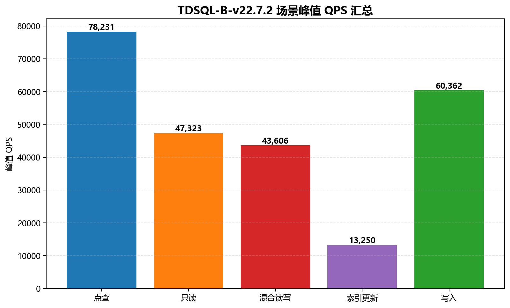
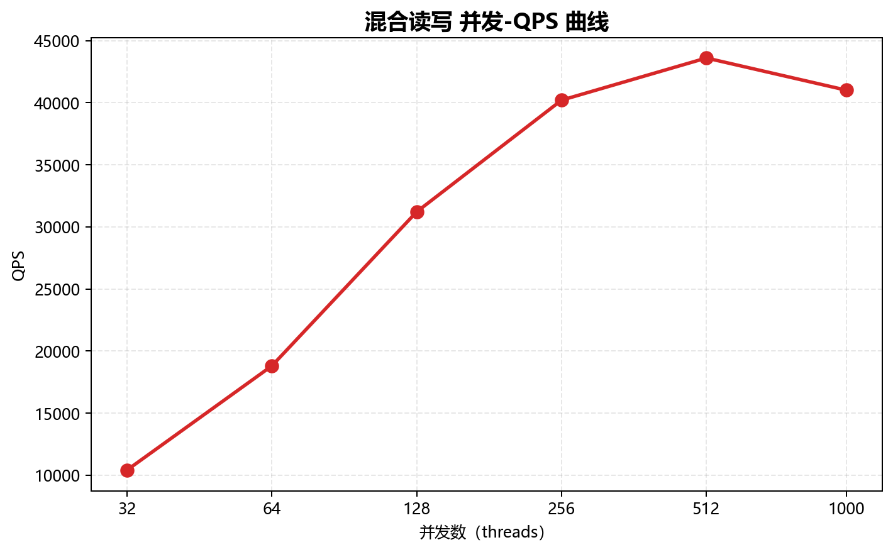
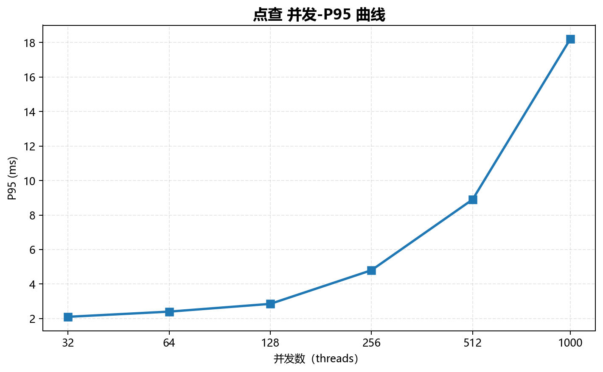
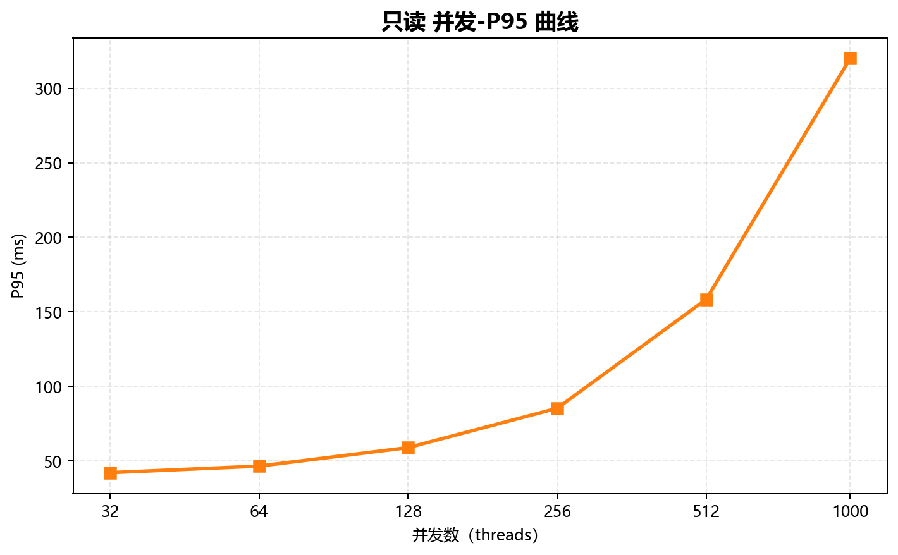
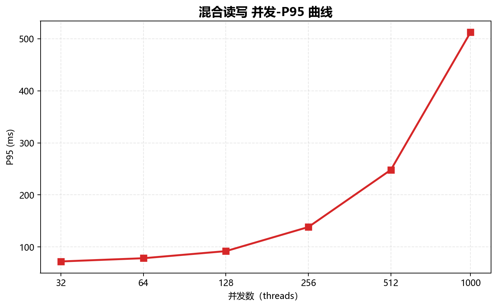

第 1 章 测试结论
1.1 测试结论摘要
TDSQL-B-v22.7.2 的 sysbench OLTP 日志包含 5 个场景、6 个并发档，共 30 条记录。日志声明每项测试时长 300s，测试开始时间为 2026-06-10 14:00:00。五个场景的已测 QPS 峰值均出现在 512 并发，1000 并发时吞吐均有所回落且 P95、P99 上升；各场景分别分析，不合并为平均性能。
1.2 关键性能数字
| 场景 | 峰值并发 | 峰值 TPS | 峰值 QPS | P95@峰值 (ms) |
|---|
| 点查 | 512 | 78,230.60 | 78,230.60 | 8.90 |
| 只读 | 512 | 3,380.20 | 47,322.80 | 158.40 |
| 混合读写 | 512 | 2,180.30 | 43,606.00 | 248.20 |
| 索引更新 | 512 | 13,250.40 | 13,250.40 | 42.80 |
| 写入 | 512 | 20,120.80 | 60,362.40 | 32.50 |

图：TDSQL-B-v22.7.2 各场景峰值 QPS。不同场景的事务工作量不同，图中数值不代表场景优劣。
1.3 核心结论
[L1]点查（oltp_point_select）：并发 32→512，QPS 18,420.50→78,230.60（4.25 倍）；在已测档位中峰值位于 512 并发。1000 并发 QPS 为 75,100.20，较峰值下降 4.00%；P95 从 2.10ms 增至 18.20ms，P99 从 3.40ms 增至 32.10ms。 数据来源：data/single.log；extracted_data.records[scenario=oltp_point_select]
[L1]只读（oltp_read_only）：并发 32→512，QPS 11,484.20→47,322.80（4.12 倍）；在已测档位中峰值位于 512 并发。1000 并发 QPS 为 45,088.40，较峰值下降 4.72%；P95 从 42.10ms 增至 320.10ms，P99 从 58.30ms 增至 458.20ms。 数据来源：data/single.log；extracted_data.records[scenario=oltp_read_only]
[L1]混合读写（oltp_read_write）：并发 32→512，QPS 10,408.00→43,606.00（4.19 倍）；在已测档位中峰值位于 512 并发。1000 并发 QPS 为 41,016.00，较峰值下降 5.94%；P95 从 72.30ms 增至 512.30ms，P99 从 98.50ms 增至 748.40ms。 数据来源：data/single.log；extracted_data.records[scenario=oltp_read_write]
[L1]索引更新（oltp_update_index）：并发 32→512，QPS 3,120.50→13,250.40（4.25 倍）；在已测档位中峰值位于 512 并发。1000 并发 QPS 为 12,820.10，较峰值下降 3.25%；P95 从 12.80ms 增至 88.40ms，P99 从 20.40ms 增至 152.30ms。 数据来源：data/single.log；extracted_data.records[scenario=oltp_update_index]
[L1]写入（oltp_write_only）：并发 32→512，QPS 14,460.30→60,362.40（4.17 倍）；在已测档位中峰值位于 512 并发。1000 并发 QPS 为 58,741.20，较峰值下降 2.69%；P95 从 8.40ms 增至 68.40ms，P99 从 14.20ms 增至 124.30ms。 数据来源：data/single.log；extracted_data.records[scenario=oltp_write_only]
第 2 章 测试环境
2.1 数据库配置
| 项 | 源日志值 |
|---|
| 产品 | TDSQL-B-v22.7.2 |
| DB 端点 | 10.0.0.11:3306 |
| 开始时间 | 2026-06-10 14:00:00 |
| 数据集 | tables=16, table_size=1000000, prepare=true |
| 单项测试时长 | 300s |
| 报告时间锚点 | 2026-06-19T16:00:00+08:00 |
2.2 硬件环境
源日志未提供 CPU、内存、磁盘、网络、操作系统、数据库配置参数及部署拓扑。硬件环境待补充，不能据此判断资源瓶颈或推广到其他机器。
2.3 测试方法
工具为 sysbench，具体版本与完整执行命令未记录。并发档为 32、64、128、256、512、1000；日志声明 Duration: 300s，不能将 Time 字段中的年份当作时长。
| 场景 | 说明 |
|---|
| oltp_point_select | 点查 |
| oltp_read_only | 只读 |
| oltp_read_write | 混合读写 |
| oltp_update_index | 索引更新 |
| oltp_write_only | 写入 |
TPS 表示每秒事务数，QPS 表示每秒查询数；P95、P99 为延迟分位数，单位 ms。各场景事务组成不同，不能仅按 QPS 大小评价场景成本。
2.4 数据质量与公平性
| 检查项 | 结果 |
|---|
| 产品/场景/并发档 | 1 / 5 / 6 |
| 记录数 | 30 = 1 × 5 × 6 |
| TPS / QPS / P95 / P99 空值率 | 全部 0% |
| 逐条源数据核对 | 30 条、120 个性能数值全部一致 |
| 并发覆盖 | 全部场景覆盖全部 6 档 |
| 数据集和时长 | 同一日志统一配置；300s |
| 硬件公平性 | 信息缺失，无法核实 |
原始解析器以工具名代替产品名，且时长匹配会先命中 Time 中的年份。本次输出通过日志 DB、Duration、Time、Data 显式字段校正；源文件与 Skill 均保持原样。
第 4 章 性能分析
4.1 并发扩展性
五个场景均独立使用完整六档并发绘制曲线。全部场景的已测峰值位于 512 并发，继续增至 1000 并发时 QPS 回落。该现象仅描述本次采样，不能确定精确饱和点。

图：点查 并发-QPS 曲线，横轴为以 2 为底的对数刻度。
[L1]点查（oltp_point_select）：并发 32→512，QPS 18,420.50→78,230.60（4.25 倍）；在已测档位中峰值位于 512 并发。1000 并发 QPS 为 75,100.20，较峰值下降 4.00%；P95 从 2.10ms 增至 18.20ms，P99 从 3.40ms 增至 32.10ms。 数据来源：data/single.log；extracted_data.records[scenario=oltp_point_select]

图：只读 并发-QPS 曲线，横轴为以 2 为底的对数刻度。
[L1]只读（oltp_read_only）：并发 32→512，QPS 11,484.20→47,322.80（4.12 倍）；在已测档位中峰值位于 512 并发。1000 并发 QPS 为 45,088.40，较峰值下降 4.72%；P95 从 42.10ms 增至 320.10ms，P99 从 58.30ms 增至 458.20ms。 数据来源：data/single.log；extracted_data.records[scenario=oltp_read_only]

图：混合读写 并发-QPS 曲线，横轴为以 2 为底的对数刻度。
[L1]混合读写（oltp_read_write）：并发 32→512，QPS 10,408.00→43,606.00（4.19 倍）；在已测档位中峰值位于 512 并发。1000 并发 QPS 为 41,016.00，较峰值下降 5.94%；P95 从 72.30ms 增至 512.30ms，P99 从 98.50ms 增至 748.40ms。 数据来源：data/single.log；extracted_data.records[scenario=oltp_read_write]

图：索引更新 并发-QPS 曲线，横轴为以 2 为底的对数刻度。
[L1]索引更新（oltp_update_index）：并发 32→512，QPS 3,120.50→13,250.40（4.25 倍）；在已测档位中峰值位于 512 并发。1000 并发 QPS 为 12,820.10，较峰值下降 3.25%；P95 从 12.80ms 增至 88.40ms，P99 从 20.40ms 增至 152.30ms。 数据来源：data/single.log；extracted_data.records[scenario=oltp_update_index]

图：写入 并发-QPS 曲线，横轴为以 2 为底的对数刻度。
[L1]写入（oltp_write_only）：并发 32→512，QPS 14,460.30→60,362.40（4.17 倍）；在已测档位中峰值位于 512 并发。1000 并发 QPS 为 58,741.20，较峰值下降 2.69%；P95 从 8.40ms 增至 68.40ms，P99 从 14.20ms 增至 124.30ms。 数据来源：data/single.log；extracted_data.records[scenario=oltp_write_only]
4.2 P95 延迟稳定性
五个场景 P95 随并发升高而增加；每张图只展示相应场景，P99 完整保留于第 3 章。分位数是不同负载档位的汇总值，不构成重复运行的方差或置信区间。

图：点查 并发-P95 曲线，单位 ms。
点查：32 并发 P95=2.10ms；512 并发 P95=8.90ms；1000 并发 P95=18.20ms。

图：只读 并发-P95 曲线，单位 ms。
只读：32 并发 P95=42.10ms；512 并发 P95=158.40ms；1000 并发 P95=320.10ms。

图：混合读写 并发-P95 曲线，单位 ms。
混合读写：32 并发 P95=72.30ms；512 并发 P95=248.20ms；1000 并发 P95=512.30ms。

图：索引更新 并发-P95 曲线，单位 ms。
索引更新：32 并发 P95=12.80ms；512 并发 P95=42.80ms；1000 并发 P95=88.40ms。

图：写入 并发-P95 曲线，单位 ms。
写入：32 并发 P95=8.40ms；512 并发 P95=32.50ms；1000 并发 P95=68.40ms。